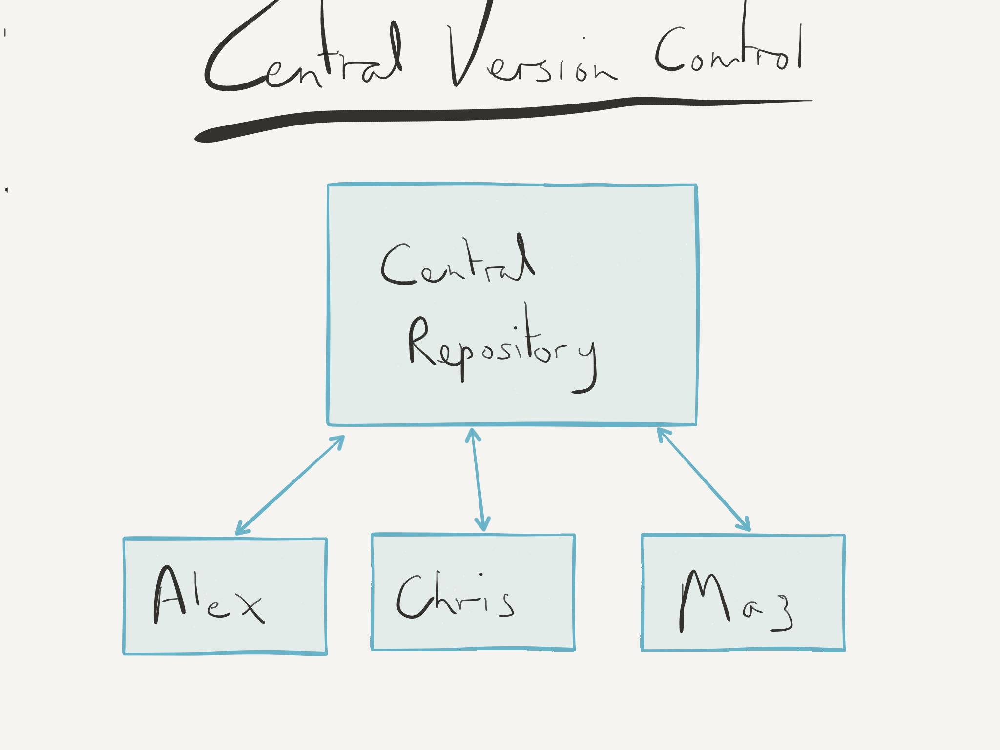
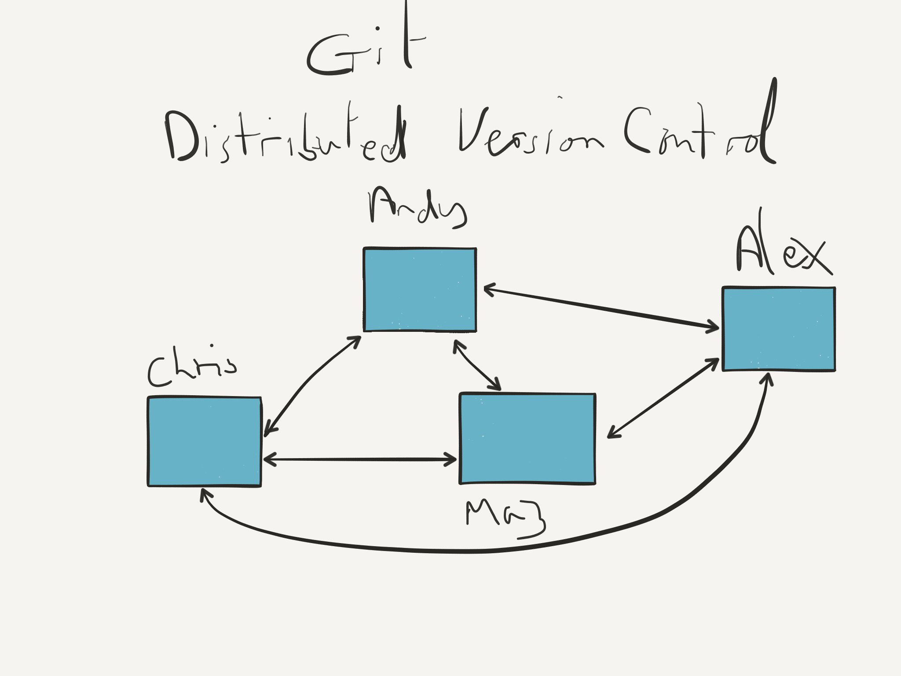
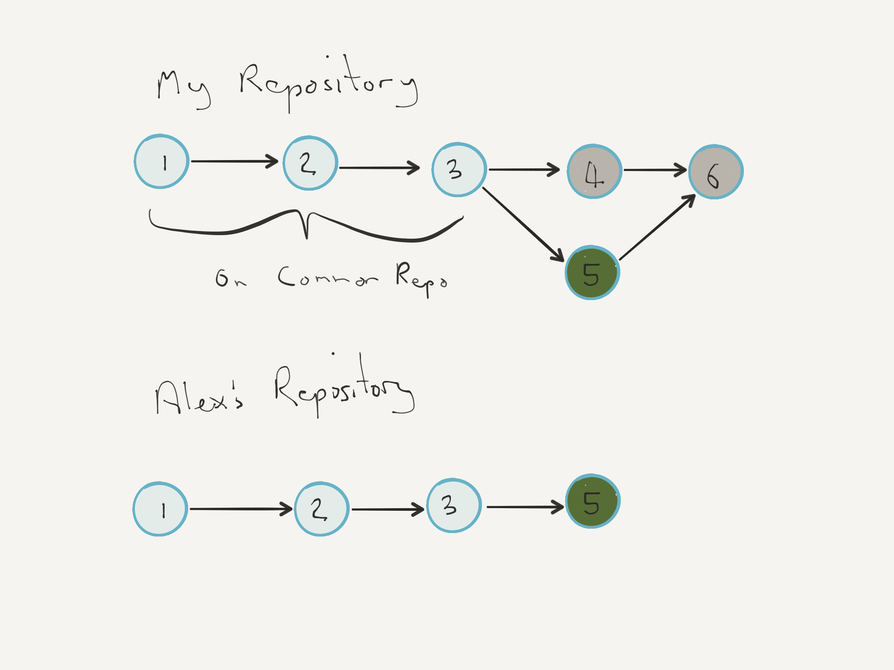
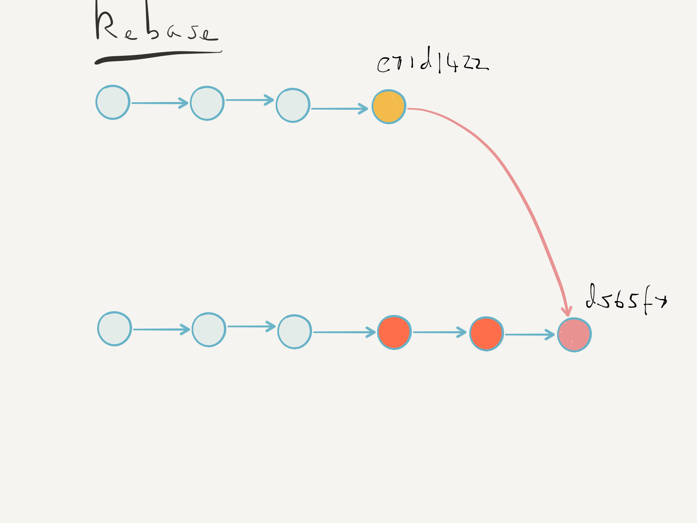
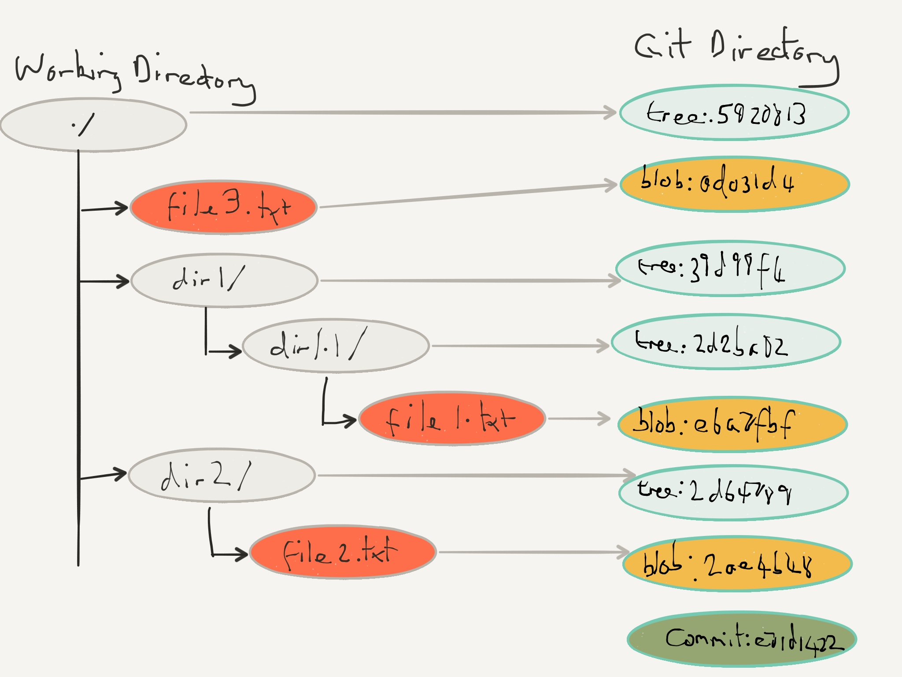

What is Git?
Git is a distributed revision control system with an emphasis on speed, data integrity, and support for distributed, non-linear workflows.
It's a Time Machine
Small, incremental changes
Record of events
Who
What
When
Why
Rewind time
Try out a change safely
Integrate code across team
It tells a story.
It protects you from mistakes.
It enables review.
Git is a distributed version control system?
What does that mean?
Everything can be done locally & independently.




